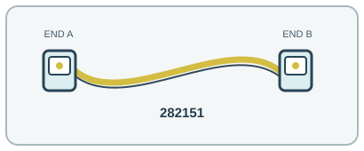

[ INDIVIDUAL COMPONENT // OPTICAL FIBER PATCH CORD ]
FS.com 282151 1 m OS2 LC/UPC Duplex Fiber Patch Cable
A short single-mode LC patch lead for OS2 links and matching long-reach optics.

IDENTIFICATION: Exact manufacturer model/SKU: FS.com 282151. Connector fit alone does not establish electrical, optical, protocol or platform compatibility.
Product specifications
| Manufacturer model / SKU | FS.com 282151 |
|---|---|
| Product type | OPTICAL FIBER PATCH CORD |
| Connector/end types | LC/UPC duplex → LC/UPC duplex; two fibers, A-to-B polarity. |
| Fiber grade / Ethernet category | OS2 single-mode 9/125 µm, G.657.A1 bend-insensitive fiber (compatible with G.652.D). |
| Length | 1 m (nominal). |
| Bend radius and shielding | 2.0 mm tight-buffered LSZH yellow jacket, dielectric/no EMI shield. Product specification lists minimum fiber bend radius 10 mm and cable bend radius 10D dynamic / 5D static (20 mm / 10 mm at 2 mm OD). |
| Speed / distance limits | With matching OS2 10GBASE-LR optics, a single-mode link can reach up to 10 km at 1310 nm; transceiver type and end-to-end link budget set the actual maximum. This short cord contributes negligible but nonzero loss. 10 km is the 10GBASE-LR optic/channel limit, not a rating unique to this 1 m jumper. |
| Compatibility | Duplex LC/UPC OS2 ports and matching single-mode transceivers; verify wavelength, polarity, connector polish and budget. Do not connect to multimode ports or APC connectors. |
Compatibility and handling
Duplex LC/UPC OS2 ports and matching single-mode transceivers; verify wavelength, polarity, connector polish and budget. Do not connect to multimode ports or APC connectors.
Bend-radius note: 10 mm minimum for the fiber itself; cable assembly limits are 20 mm dynamic and 10 mm static (10D/5D at 2 mm OD).
Shielding / jacket: All-dielectric single-mode fiber with LSZH jacket; no metallic EMI shield.
Inspect the jacket, strain relief, latch and end faces before use. For optical assemblies, keep dust caps in place and never look into a live fiber. For copper/active-end assemblies, avoid tight bends and cable crushing; validate PoE and device compatibility from the relevant port documentation.
Manufacturer sources and technical references
- FS.com — 282151 1 m OS2 LC/UPC patch cableExact model, OS2 grade, connectors, length and bend values.
- FS.com — 10G optical module selection and reachManufacturer reference for matching LR optics and single-mode reach.
- FS.com — fiber patch cable performance guideManufacturer cable construction/handling guidance.
Manufacturer sources are HTTPS. Limits quoted here are link/application limits: the installed cable channel, transceivers, connectors, port support and installation quality determine actual service. Confirm model revision and regional documentation before deployment.